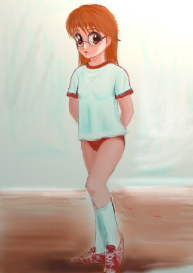

「庄司ーーーっ！ ボールが行ったぞーーーっ！」
恐れていたことが起きてしまった。庄司誠二は、まずそう思った。小学校５年の体育の時間。クラスの男子が紅白に別れてサッカーの試合をしていたときのことだった。
自分が所属する紅組は、メンバー構成上おそらく白組には勝てないだろうと思われた。そこで紅組は極端な作戦に出ていたのだった。
『勝てないなら負けなければいい』
なんと敵陣のゴール前には誠二のみを配置し、残りは全て味方ゴール前に配置した極端な守備体制を取ったのだった。確かにこれだけのメンバーを集中させて守備をさせれば、滅多なことではゴールを奪われることはない。紅組の作戦は成功するかに思われた。
しかしその作戦に対して白組は、極端に攻撃態勢にシフトした布陣で臨んできた。早い話が敵陣に居るのは誠二と敵側のゴールキーパーのみ。後の選手は敵味方含めて全てが味方側のサイドで団子状態になってプレーをしていたのだった。まあ小学生のサッカーと言えばこんなもんであろう。
ボールはゴールに刺さることもなく足から足へと移動するだけで、あと５分もすれば試合も終了というとき、それは起こった。なんの弾みか操る者もいないまま、ボールだけが誠二のもとにポーンと飛んで来たのだった！
「庄司ーーーっ！ ゴールだ！ ゴールにキックしろーーーっ！」
遠くに見える味方が口々に叫ぶ。敵側の選手達は必死になって誠二のもとに走ってくる。ちなみにみんなオフサイドなんて知っちゃいない、のどかな時代だった。
（はやく蹴らないと！）
焦る誠二は一旦ボールを止めると、さっきまで雑談に花を咲かせていた相手のゴールキーパーに向き直った。そして渾身の力を込めてキック！ しかしボールは空中に浮かぶことなくコロコロと転がり、ゴールキーパーに向かって力無く進んで行った。そしてキーパーはその役割をしっかりと果たした。
（しまった！）
自分でもそう思ったとき、背後から落胆する味方の声が聞こえてきた。その声は誠二の心を切り刻んだ。
『あそこで庄司じゃなくて脇田君がいれば絶対に勝てたのに……』
『庄司がうちのチームに入ったから負けたんだ』
『男のくせにボールをまともに蹴ることも出来ないんだからな』
『サッカーだけじゃないぜ。この前のソフトボールの時だって……』
『運動会のリレーの時だってアイツのせいで負けたんだ。どうしてあんなところで転ぶんだよ』
『そうそう、騎馬戦の時だって庄司が……』
『ホントにアイツは男なのか？ もしかしてついてないんじゃないの？』
『あはははは……。絶対についてないぜ。きっとさ』
『庄司、お前のせいで負けたんだからな。覚えてろよ！』
暗闇の中から聞こえてくる声、声、声。もう忘れたと思っていたのに、その声はとてつもなくリアルな臨場感を伴っていた。
（男なんて嫌だ！ 運動出来なくてもバカにされない女の子になりたい！）
いつしか誠二の頭の中にはその台詞がぐるぐると渦巻いていた。
「女の子にっ！」
その叫びとともにガバッと跳ね起きた果穂。状況が飲み込めず一瞬呆けてしまったが、２〜３回まばたきをするとようやく頭が回転し出した。果穂には珍しいことである。
「夢……、でしたか」
しかしいまだ実感を伴わなかったのか、両の手でふくらみかけた自分の胸をそっと触ってみる。まだ固い胸の膨らみが手のひらを押し返す。そのまま右手を下に滑らせて滑らかな股間に触れた。果穂が誠二ではなく、果穂であることを証明する部分はそこにあるべくしてあった。
「……良かった。私、女の子ですよね……」
らいか大作戦 外伝
「果穂ちゃん大作戦」
原案：かわねぎ様
作：ジャージレッド
画：ステレオ様
「ふふふん、ふ〜ん♪ ふふん、ふふ♪ ふっふふ〜ん♪」
鼻歌交じりで朝食の用意をする果穂。いったいどんな歌なのかは知らないが聞いたことも無いようなメロディである。もしかすると惑星連合で流行っている歌なのかもしれない。ヒラヒラのフリルがついた薄ピンク色のエプロンをしている果穂は、完全に“趣味”の世界に入っている。おみそ汁を少しおたまですくうとそのまま小鉢に移して、可愛らしくふうふうとしながら味見をした。にこりとした笑みが出たところを見ると思った以上においしく出来たらしい。
おみそ汁が入った鍋の火を弱めた果穂は、次に手際よく卵を割ると適度に溶いて玉子焼きを作り出した。玉子焼きをふっくらと焼き上げるコツは、適量のだし汁を入れておくことにある。その他、お砂糖も入れてあるのでやや黒い焦げ目がつくのだが、そんなことは気にしない。甘い玉子焼きは、少々焦げているものと昔から相場が決まっている。男だった頃は甘い玉子焼きは嫌いだったのだが、少女の身体になってからは大好物の１つになってしまっていたりする。
「……おはよう。果穂。どうして果穂が朝食を作ってるんだ？ 確か今朝の食事当番は俺だったはずだけど」
ほぼ果穂が朝食を作り終わった頃、頼香が起きてきた。いつもの時間に起きてきたはずなのに既に果穂が朝食を作り終えているのを見て、頼香は不思議そうに尋ねる。
「いえ、ちょっと早く起きてしまったものですからついでに朝食の準備をしておこうと思いまして。やっぱり女の子が朝早くから朝食の支度をしているのって絵になりますよねえ♪」
果穂は少々うっとりとした表情で頼香に答える。どうやら“朝早くから朝食の準備をする可愛い女の子な自分”という立場に酔っているようだ。
「なんだ……。いつものことだったのか……」
頼香は納得するとテーブルの自分の席に着いた。果穂は時々、こうして女の子な自分に酔う時がある。
「で、今回はどんな悩みがあるんだよ」
テーブルに片ひじをついて、顔を支えて目を細める頼香。
「えっ？ 悩みなんかありませんよ」
驚いたような表情を浮かべる果穂。料理を作る手も止まっている。
「そんなこと無いだろ。今までだって果穂がいつも以上に女の子している時って、だいたい何か悩み事がある時だったろ？ 俺だって中身は大人なんだからそれぐらい気づくぞ」
実際には頼香よりも果穂のほうが年上なのだが、この際、それは無視する。
「だから悩みなんてありませんってば。ただ純粋に女の子って良いな♪ って気持ちで、お料理を楽しんでいたんですよ」
再び料理をする手を動かし出す果穂。さっき焼いた玉子焼きを包丁で調度良い大きさに切っていく。
「頼香さんもそう思うでしょ？ 女の子って可愛いし、いろんな服を着られるし、髪型だって楽しめるし、こうしてお料理するときにエプロンしていて似合うのはやっぱり女の子の特権ですよね」
色々と女の子の良い点を述べる果穂。
「そうかもしれないけれど……。それで？」
とりあえず先を促す頼香。悩みごとは無理に聞き出すよりも、相手が自然に口を滑らすのを待つ方が良いのだ。特に悩みごとを自分で抱え込んでしまう傾向がある果穂を相手に生活していると、そういう態度が身に付いてしまった頼香だった。
「それでって……。そうですね、女の子は何をするにも結構自由ですよね。昔はともかく今の時代は、何をするにしても女の子のほうが自由じゃないですか。それに、女の子は運動出来なくても許されちゃうところがありますし……」
そう言ってにっこりと笑顔を頼香に向ける果穂だったが、その目が捉えたのは、頼香の怒った顔だった。
「やっぱり！ 昨日から始まった運動会の練習。何だか果穂は手を抜いていると思ったらそんなことを考えていたのか！ 女だから運動出来なくても良いなんて考えは間違ってる。今日の練習からは手を抜かせないぞ！」
一気に熱くなった頼香は、珍しくも果穂を叱りつける。以前は教師と生徒の関係だったなんてことは完全に忘れ去られているようだ。
「頼香さん。落ち着いてくださいよ。何も私は女の子だから運動出来なくても良いなんて言ってませんよ。『女の子だと運動出来なくても許されるところがある』って言っただけですよ」
当惑した顔で頼香をなだめる果穂。困った顔も身震いがしそうなほど可愛いのだが、当然頼香には関係の無いことであった。
「どこが違うんだよ！」
聞く耳持たないという感じの頼香。
「全然違います。女の子も男の子も、それぞれ運動が得意な子がいれば、運動が不得意な子がいます。それは生まれつきのことですから、しょうがないことなんですよ。運動が不得意でもその他の才能があれば、そこを伸ばせば良いんです。何も無理して不得意なことをしなくてもいいんですよ。……でもそうは言っても実際には子供の頃って、運動が出来ない男の子って馬鹿にされたりしますよね。でも女の子は運動が出来なくても許されるところがあるって、そういった事実を言っただけですよ」
こちらも自分の意見を論理的に説明する果穂。しかし頭に血が上った頼香は聞く耳を持たなかった。
「へえ〜、つまり果穂は元々運動が出来ないし、今は女の子だから運動会の練習で手を抜いても良いと、そう言いたいんだろ！」
「もうっ！ 頼香さん。人の話はきちんと聞いてください！」
とうとう本格的に怒り出した頼香と果穂であった。
「あのう、そろそろ朝食にちたいんでちゅが……」
もけがおずおずと声をかける。
「うん、早くしたほうがいいな。ケンカしてる間に、結構時間がたってしまったぞ」
こういうときでも冷静なからめるであった。
「そうですね。もけさんとからめるさんの言うとおり朝食にいたしましょう」
頼香を無視してテーブルに朝食を並べ出す果穂。心なしかいつもより、もけとからめるのスペースが広めにとってあるような気がする。
「もけたちが腹を空かせちゃかわいそうだな。じゃあ分からず屋さんのことはほうっておいて朝食にするとしようか。じゃあもけ、からめる。頂きます」
「もけさん、からめるさん。たっぷり食べてくださいね。なぜか今日は１人少ないみたいですから」
こうして２人は直接会話をすることなく、嫌みの応酬をしながら朝食をとったのだった。
◇ ◆ ◇ ◆ ◇ ◆ ◇ ◆ ◇ ◆ ◇ ◆ ◇ ◆ ◇ ◆ ◇ ◆ ◇ ◆ ◇ ◆ ◇
「おはよう。頼香ちゃん。果穂ちゃん」
いがみ合ったままの２人が教室に入ると、来栖が挨拶をしてきた。今日は日直だったので、早めに登校していた来栖だった。というわけで来栖はまだ２人がケンカ状態にあるのを知らない。
「おはよう。来栖」
「おはようございます。来栖さん」
にこやかながらも、どことなく変な雰囲気を漂わせている２人。いつもなら３人まとまっての会話が始まるはずなのに、頼香と果穂は来栖に挨拶をしたかと思うとそのまま自分の席に着いてしまった。
「果穂ちゃん。どうかしたの？ 何だか今日はおかしいよ」
さすがに異変を察知した来栖は、まずは席が近い果穂に話しかけた。
「来栖さん、ご心配なく。大した問題じゃありませんから。ちょっと分からず屋さんがいるだけですので」
頼香に聞こえるように、わざと声の調子を変えて話す果穂。意外と根に持つタイプのようである。
「分からず屋さんって、頼香ちゃんのこと？」
突然、興味津々の顔つきになった来栖だった。なにせ頼香と果穂がケンカすることなんて初めてなので無理もない。
「俺が分からず屋なら、どこかの誰かさんは頭の固い頑固者だ」
すかさず口を挟む頼香。
「うーん。何があったの？」
とりあえず現状を理解しようということで、引き続き果穂に質問する来栖。そして果穂は質問を受けて今朝の出来事を話し出した。
「……というわけで、私は『女の子だと運動出来なくても許されるところがある』って言ったんですけど、分からず屋さんは、私が『女だから運動出来なくても良い』って言ったと誤解して文句を言ってるんです。日本語はちゃんと使って欲しいですよね」
来栖にも理解できるように順序立てて説明した果穂だった。こんなところは元教師としての性格が出ているのだが、もちろん来栖は気がつかない。ちなみに果穂の意見は、『結果的に運動が出来なくても、女の子はそれでも許されてしまうということがある』というものだが、頼香が理解したところでは、『女の子だから最初から運動出来なくてもかまわない。つまり運動に対して努力しなくても良い』というものだ。冷静に考えてみると、頼香は果穂の言葉を誤解しているのは明らかなのだが、あいにくと頼香は冷静ではなかった。
「詭弁だ。どっちにしても果穂は、自分は女の子だから運動会の練習は手を抜いても良いって言ってるだけじゃないか！ とにかく手抜きは駄目だ。力いっぱい頑張って全力を出しきるのが運動会だ！」
自分の席に座ったまま一通り果穂の言葉を聞いた後、頼香はすくっと立ち上がると一刀両断の元に果穂の主張を切り捨てた。こぶしを握って片足を椅子の上にドンッと乗せて力説するその背景には、ドドーンと打ち寄せる荒波が見えたような気がした。
「はあぁぁ〜〜。頼香ちゃんと果穂ちゃんって、いつもはとっても大人っぽいのに、結構お子様なのね……」
呆れたようにため息をつくと、やれやれと肩をすくめて首を振る来栖だった。
◇ ◆ ◇ ◆ ◇ ◆ ◇ ◆ ◇ ◆ ◇ ◆ ◇ ◆ ◇ ◆ ◇ ◆ ◇ ◆ ◇ ◆ ◇
「それでは、来月に行われる運動会の各種種目に出場するメンバーを決めたいと思います。昨日は各自が好きな種目を自由に練習しましたので、どの種目が自分に向いているか、それとも向いていないのかが分かったと思います。では、まずは立候補から受け付けます。何か参加したい種目がある人は手をあげて立候補して下さい」
ホームルームの時間、担任の先生の指示を受けて学級委員の女の子が議事の進行をしている。最近は全体的に女の子のほうがしっかりとして元気がいいので、男の子が学級委員で、女の子が副学級委員長という図式は随分昔から崩れている。
頼香なんかは、男どもしっかりしろ！ と思っていたりするのだが、頼香の言動がますます男の子達を萎縮させていることは気がついていない。男の子が男らしくするためには、女の子らしい女の子の存在が不可欠だったりするのだ。
女の子は女の子だけでも女の子らしくなれるが、男の子の場合はよほど強い意志を持たない限り男の子だけでは男らしくはなれない。男の子が男らしくなるには、それなりの状況が必要なのだ。そういう意味では男らしさという幻想は、結構微妙なバランスの上に成り立っていると言える。
「はいっ！ 立候補します！」
いきなり手をあげたのは体力担当（笑）の頼香である。小学校の勉強は退屈なだけだが、こういったイベントは楽しくてしょうがない。知力を競うとなるとハンデがありすぎて本気になれないが、運動会のように体力を競うというなら話は別だ。肉体年齢はもちろん同じ。むしろ女の子になっている分、自分が本気を出してもＯＫと考えているので全力を出し切ることに対して遠慮がない。もっとも実際には頼香は、クラスの男女の中でもかなり体力があるほうの部類に入るのだが、そんなことは気にしちゃいない頼香だった。
「はい、戸増さん」
委員長の指名を受けて、頼香は勢いよく立ち上がったので、椅子がガタガタと音をたてた。こういうちょっとがさつなところが、男子から人気の無い理由である。
「俺は、１００メートル走と騎馬戦に出たい！」
闘志満々、かかってこいっ！ という感じで発言した頼香。あまりの勢いに押されて、委員長もすぐには返事が出来ない。一呼吸置いて、ようやく委員長が反応を示した。
「戸増さん。１人１種目に参加すれば良いのよ。２種目も出るんですか？」
頼香の意志を確認する委員長。
「出る！ 確かに原則的には１人１種目で良いはずだけど全ての種目の人数を満たすためには、クラスの人数からして最低でも１人だけは２種目に出なくちゃいけないはずだ」
あらかじめ考えていたのか、よどみなく返答をする頼香。よっぽど運動会に入れ込んでいるらしい。
「……確かに計算上はそうなりますけど、そういう場合は参加しなくても良いことになっているんですよ」
一応、念のために運動会のルールを説明する委員長だったが、その言葉は頼香の発言によって中断を余儀なくされた。
「委員長、『出なくても良い』ってだけで、『出ちゃいけない』っていうようにはなってないと思うけどな」
ルールの穴を指摘する頼香。確かに言われてみればその通りなので、委員長も返答に困って担任の顔を見る。見られた先生もちょっと考え込んでいたが、生徒本人がやりたいというものを拒否するのは教育者としてどうか？ とでも思ったのか、委員長の顔を見ながらゆっくりと頷いた。
「じゃあ、戸増さんは１００メートル走と騎馬戦ということで良いですね」
ついついファイナルアンサー？ と言いたくなる衝動を抑えて最終確認をする委員長。
「もちろんＯＫ！」
一言で返答すると、頼香はニカッと笑いながら席に着いた。その横顔を何やら複雑な表情で見る果穂だった。
「何だよ」
果穂に見られていることに気づいた頼香は、朝からの延長で、ちょっとぶっきらぼうに口をきいた。
「いえ、何でもありません。頼香さんは運動が得意なんですから複数の種目に出てもそれはよろしいんじゃないですか。でも世の中には運動が不得意な人も居るってことを忘れないでくださいね」
冷たい雰囲気を漂わせて果穂は返答した。ちなみに教室の中は、誰がどの種目にエントリーするのかということでざわついているので、２人が会話を交わしていてもそんなに目立たない。
「果穂！ まだそんなことを言っているのか？ 出来るか出来ないかはやってみなくちゃ分からないだろ！」
熱血頼香は、まるで射抜くような力を視線に込めて果穂を見ながらそう言い放った。
「頼香さん。私は、やる前から出来ないなんて言ってませんよ。さんざんやってみて出来なかったということを知ってるんです。お互いに見た目通りの人生を送ってる訳じゃありませんよね」
冷静に答える果穂。静かに語るその口調からは、少女らしからぬ重みが感じられる。
「それは前の身体のことでだろ。今は違うじゃないか」
頼香はそう言ったのだが、微妙に認識が間違っている。頼香の今の身体は、惑星連合で士官にまでなった軍人、ライカ・フレイクス少尉の肉体をベースとしているので、頼香が頼之だった頃よりも遙かに基礎体力や運動神経がある。
対して果穂の場合は、性別を女性に変更して肉体年齢を若返らせたという２点の操作を行っているものの、あくまでもその肉体は庄司誠二の肉体をベースとしているので、基礎体力や運動神経に関しては昔の身体に比べて落ちているぐらいだ。もちろん若返った分だけ体力は回復しているが、誠二が小学５年生だった頃と比較すると、果穂の体力・運動神経はお世辞にも良くなったとは言えない。
「ねえ、果穂ちゃんはなんの種目にするのかまだ決めていないの？」
頼香と果穂が言い合っていると、いきなり来栖が話しかけてきた。突然に話しかけられて、一瞬、今までの会話を聞かれたかと思った２人だったが、来栖の様子では秘密（？）の会話を聞かれたということでは無いらしい。
「ええと、まだ決めていないんです。……ところで来栖さんは、どの種目に決めたんですか？」
会話の矛先をかわそうとして、逆に果穂は来栖に質問をした。
「８００メートルリレーだよ」
元気に答える来栖。来栖も運動は得意なほうであるので、さっさと立候補して決めたらしい。
「８００メートルリレーか。来栖も頑張ってるな。で、果穂はどうするんだよ？」
またさっきまでの雰囲気に戻って果穂に質問する頼香。
「さあ……、どうしましょうかねえ」
対して言葉をにごす果穂。その時……。
「それではまだ出場種目が決まっていない人は、……ええと、朝岡正広（まさひろ）君、庄司果穂さん。２人は残った種目の男女混合二人三脚リレーに出てください」
委員長が果穂の運命を決めたその時、同じく運命を決められた朝岡君は教室の目立たない場所に座ってうつむいていた。
「よろしいですか？ 朝岡君、庄司さん」
委員長が念を押すように２人に問いかける。
「はい。分かりました」
まず果穂が返事をした。出来るものならどの種目にも出ず、クラスメート女子の体操着姿をビデオ撮影することに専念したいのだが、決まったのならしょうがないという気持ちだ。
「じゃあ庄司さんはそれで良いということで決まりですね。それでは朝岡君もそれで良いですか？」
再度、確認をする委員長。
「はい……」
嫌々ながらという雰囲気をまき散らしつつ返事をする朝岡君。その姿を見て果穂の顔がちょっと曇ったのだが、それに気づいた者はいなかった。
「それでは今日のホームルームを終わります。昨日と同じく放課後に運動会の練習を行いますけれど、今日からは各自決まった種目の練習をして下さい」
委員長がホームルームの終了を宣言して自分の席に戻ると、担任からの連絡事項が始まった。それを横目に頼香は果穂に小声で話しかけた。
「果穂、二人三脚リレー。楽しそうな競技に参加出来て良かったな」
若干、皮肉の匂いがするセリフである。
「どうせ二人三脚リレーは色物競技ですからね。適当に頑張りますよ」
果穂は気のない返事をする。それを聞いた頼香の気持ちは急激に高ぶってきた。
「果穂っ！ いったいいつまでそんなこと言っているんだよ！」
思わず立ち上がり、大声を出してしまった頼香。その瞬間、教室中の視線が頼香に集中した。
「戸増頼香さん！ 庄司果穂さん！ 明日までに反省文を原稿用紙に３枚書いてくるように」
担任の教師はそう言い残して、教室を後にした。残された頼香と果穂はお互いにその視線を絡みつかせて目に見えない心の肘で相手のことを小突き回していた。そんな２人を見てまたしても、『果穂ちゃんも頼香ちゃんもお子様ね』という感想を来栖が持っていたことは内緒であった。
◇ ◆ ◇ ◆ ◇ ◆ ◇ ◆ ◇ ◆ ◇ ◆ ◇ ◆ ◇ ◆ ◇ ◆ ◇ ◆ ◇ ◆ ◇
「今日から秋の運動会の練習が本格的に始まります。自分が参加する事になった競技ごとに集合して、人数を確認したら練習を始めるように。それでは解散！」
放課後の運動会の練習時間。まずは担任の先生がそう言うと、５年１組の生徒達は運動場に散っていった。頼香は当然に張り切っている。とりあえず１００メートル走は個人競技なので練習するのはおいといて、まずは騎馬戦を行うグループへと走っていった。人数構成は男子と女子が半々というところか。どうやら馬や騎手をするのに男子も女子も関係無いらしい。とは言っても頼香は当然に騎手になりたがっているのだが。
同じく来栖も張り切って８００メートルリレーを行うグループへと行くと、元気に笑いながら練習を開始した。とりあえずグランドを何周かしながら、バトンの渡し方の練習でもするらしい。
そして一方の果穂はと言うと…………。
「いいか！ 男女混合二人三脚リレーは、お遊びの競技なんかじゃない！！ れっきとした正式種目なんだ」
ここ、二人三脚リレーの選手グループでは、１人の大柄な体格の男子が、集まった選手のみんなに激を飛ばしていた。
「手を抜かない。絶対に勝つ！」
グラウンドのすみに集合した選手達を前に熱く語るその姿は、小学生とは思えないぐらいほど、体育会系丸出しである。どうやら体育会系の人間というのは年齢を問わず、比較的広範囲に分布しているらしい。
「村山君、待って下さい。この男女混合二人三脚リレーは場を盛り上げる為の『おもしろ競技』だと聞いています。何もそんなにも熱くならなくても良いじゃないですか。勝ち負けは関係なく楽しみましょうよ」
果穂は冷静な中にも少々焦った色を出しながら抗議した。教師だった頃の経験上、勝負に夢中になりすぎて見境が無くなってくると必ず大きな事故とかが発生するものなのだ。ちょうど村山靖史（やすし）という子の状況は、そんな危なげな印象を与えていたのだった。
「あぁ〜あ！ これだから女ってやつは！ いいか、庄司。運動会の種目は全部『競技』なんだよ。競わなくてどうする！？ 楽しければそれで良いなんてことはもう二度と口にするなよ。まずは全力を出しきることを考えろ」
思春期前の男子に見られるように、女子を小馬鹿にした態度を崩さない体育会系男の村山だった。
「女の子を馬鹿にしないで下さい。……それに女の子でも男の子でも、自分の体力に合わせて運動をするのが身体の発育には良いんですよ。無理をすると身体を壊すことにもなりますし」
女の子の側に立って男の子と対立する構図に、密かに萌えている果穂だったが、そんなことはおくびにも出さずに正論を述べる果穂。さすがに元教師、口がうまい。
「うるさい！ とにかく女だからって甘えは許さないぞ。それから朝岡！ お前は立候補したわけじゃ無いが、とにかく二人三脚グループの一員になったんだから、男の意地を見せてみろ！」
果穂との言葉のやりとりになんとなく自分の不利を感じた村山は、スケープゴートとばかりに、ちょっとおどおどした朝岡正広を指さしてそう言ったが、返事は返ってこなかった。
朝岡はただ黙って地面を見つめていたのだった。
「よし、まずはペアを色々と入れ替えて走ってみるぞ！」
なにやら多少気まずい雰囲気で始まった男女混合二人三脚リレーの練習だったが、いざ練習が始まってみると村山はまた元気いっぱいの体育会系の雰囲気を作り出していた。
「村谷君。あなた、見た目よりも色々と考えているんですね」
みんなを仕切っている村山の意図に気が付いた果穂は、素直に褒め言葉を口にした。やはり元教師の性（さが）であろうか。
「当たり前だろ。リレーは単純な力比べじゃないんだから、勝つためには体力だけじゃ駄目だ。頭を使わないとな。こうやって色々と入れ替えてみると、どういうふうにペアを組んだら一番良いかが分かるだろ？」
褒められて単純に喜ぶ村山であった。その頭には既に、先ほど果穂とちょっとした言い合いをしたことなど１ミリグラムも残ってはいないらしい。さすがに体育会系……、付き合うには疲れるけれど友達にするのには良い奴かもしれない。と、思わずにはいられない果穂だった。
「まあ、頭を使うということには反対はしませんよ」
果穂はそう言いつつ、村山の隣に行くと自分の左足と村山の右足をリボンで結び始めた。
「じゃあ最初は私とお願いします」
果穂は村山の腰に左手を回すと、下から顔を見上げるようにして小学５年生にしては大きな体格の村山に声をかけた。実際、なかなかに嬉しいシチュエーションなのだが、リレーの勝負のことしか頭に無い村山は何の感想も持たずにその右手を果穂の肩に置き、まずは軽く走ることにしたのだった。……なんとももったい無いことである。
「良し！ じゃあ行くぞ！ イチニと号令をかけていくからな！」
こうして２人は二人三脚で走り始めたのだが……。
「きゃっ！ いったぁ〜い」
「わっ！ 庄司！ 転ぶんじゃない！」
歩幅の違う２人は、アッという間に足をもつらせると転んでしまった。
「いたたたた。やっぱり体格が違いすぎるんでしょうか？」
果穂はそうつぶやきながら２人の足を結び付けているリボンをほどいた。
「そうかもな。とりあえず体格は同じぐらいの奴同士でペアを組んだ方がいいな」
そう言うと村山は立ち上がり、しばらくまわりのみんなの様子を観察し出した。
「ん？ あそこで転んでいるのは朝岡か……。アイツ、やっぱり鈍くさいな」
ぶつぶつとみんなの動きを評価し出す村山。もう完全に監督気取りである。
こうして選手各人をシャッフルしての練習で、お互いにもっともしっくりくる組み合わせを見つけたみんなだったが、果穂はまだ相手を見つけられなかった。何せ誰と組んでも必ず転んでしまうのだ。
「我ながら、自分の運動神経がここまでにぶかったとは気づきませんでした……」
ちょっと呆然としつつ果穂は身体のあちこちをさすっている。打撲、打ち身の数が半端じゃない。ああ、かわいそうな果穂ちゃん。
さて果穂が呆然としている間に、どんどんとペアが決まっていき、とうとう自動的に果穂のパートナーが決定される瞬間がやってきた。
「よし、決めた。朝岡と庄司がペアになれ」
全体の動きを見ていた村山が、最終結論を出したのだった。
「なるほど。合理的に考えるならそれしかないですね」
既に村山の考えを読み切っていた果穂は、しょうがないという顔をしている。
「朝岡も、庄司も、転んでばかりだから、もしもお前達２人が、別々のペアになれば、いつも転ぶペアが２組できてしまう。しかしお前達２人がペアになれば、いつも転ぶペアは１組だけになるから、全体では早くなるはずだ。というわけだが、２人ともそれで良いか？」
良いか？ と、聞いている割には反論の言葉は受け付けないという雰囲気である。
「私はそれで良いですよ」
素直に返事をする果穂。
「……わかった。庄司さんとペアを組むよ」
対して朝岡という男の子は、どこか渋々という感じで返事をしたのだった。
◇ ◆ ◇ ◆ ◇ ◆ ◇ ◆ ◇ ◆ ◇ ◆ ◇ ◆ ◇ ◆ ◇ ◆ ◇ ◆ ◇ ◆ ◇
「じゃあ、これからよろしくお願いしますね。ええと正広君と呼んでいいですか？」
まずは挨拶をする果穂。普段は男の子のことなどまったく相手にしない果穂なのだが、運動音痴な正広に対しては、なぜか親近感めいたものを感じてしまったのだった。

「あ、ああ。いいけど……」
果穂の言葉に対して戸惑ったような返事をする正広。どうやら女の子に対しての免疫が出来ていないらしい。
「よかった。では私のことは果穂と呼んでくださいね」
にっこりと微笑みながら話す果穂の可愛らしさに、一瞬、息を飲む正広。その顔は急に真っ赤に染まってしまった。
「うん……。じゃあ、果穂……さん。練習しようか」
女の子の名前を呼ぶことに対してとても抵抗があるのか恥ずかしさを隠しきれない態度をとる正広を見ながら、果穂はちょっとおもしろくなってきた。やっぱり『私ってかわいいですからね』なんてことを思っていたりする。
「はい♪ がんばりましょうね♪」
十数分後、果穂と正広の２人は途方に暮れていた。男女混合二人三脚リレーは、一組のペアが２００メートルを走ることになっているのだが、何度やっても２００メートルを完走する前に転んでしまうのだ。しかも何度も何度も……。
「アハハハハ……。ここまで運動音痴だと、笑うしかないですよね」
果穂もそれなりに頑張ろうという気持ちはあるのだが、運動神経がついていかないのだからしょうがない。正広もやはり一生懸命に頑張っているのだが、果穂に負けず劣らず“優秀”な運動神経の持ち主であることは間違いが無いようで、気持ちに身体がついていっていない。
「もう一度……、もう一度練習しましょう。果穂さん」
疲れ切った顔をしながらも、精いっぱいの気力を振り絞って正広は練習の再開を果穂に申し出た。
「ストップ。とりあえず保健室に行きましょう。正広君、けっこうケガをしてますよ」
見ると正広君の足は擦り傷だらけだ。しかしそういう果穂の足も擦り傷がついている。
「う、うん。でも僕よりも果穂さんのほうが先に手当てしてもらったほうがいいよ。果穂さんもけっこうケガしているし……」
そして２人はお互いのケガをあらためて確認すると、保健室へと向かうことにした。
「村山君、ちょっと保健室に行って来ます？」
練習を中断するので、とりあえずこの場を仕切っている体育会系の村山にひとこと断りを入れる果穂。やはり元教師なだけあって、こういうことに関してはとても律儀である。
「ケガか……。２人とも本当に鈍くさいな。まあ庄司は女の子だからしょうがないけど、朝岡！ お前も一応男ならもっとしっかりしろよ！ とにかく保健室で手当をしたらすぐに戻って来るんだぞ」
ちっ、まったくしょうがねえなあ……、というオーラを漂わせる村山をしり目に果穂と正広の２人は運動場を横切り保健室へと歩いていった。
「このまま練習をさぼっちゃいませんか？」
手当を済ませた２人は保健室を出たのだが、保健室を出るなり果穂はいたずらっぽくそう言った。
「えっ!？ 駄目だよ！ みんな練習してるんだから……」
果穂の言葉にあわてて反発する正広だった。
「でも正広君、私考えたんですけど、私達のように運動音痴で鈍くさいペアは二人三脚で走ると必ず転んじゃいますから、むしろ走らないで歩いたほうが結果的に早くゴール出来ると思うんです。ですから、もしかすると早く走る練習をすればするほど、よく転ぶようになるのではないでしょうか？」
転び続けることに嫌気がさしたのか、ちょっとぶっとんだ発想をする果穂だった。
「そんな！ 駄目だよ。果穂さん。努力して努力して、勝つことが大事なんだよ！」
自分に言い聞かせるように声を振り絞る正広。
「……正広君。二人三脚リレーで負けたっていいじゃないですか。もちろん勝てるに越したことはないですけど、私達にとって人生の勝負はまだ始まったばかりです。この二人三脚リレーで人生のすべてが決まるわけではないんですよ」
急にまじめな表情になって諭すように静かに話し出す果穂。何やら慈愛に満ちた雰囲気すら漂わせている。
「運動が苦手なら勉強で、勉強も苦手なら歌でも良いし、絵でもいい。それすら苦手ならどんなことでも良いから自分の得意なものを見つけるんです。全ての分野で勝たなくても良いんですよ。自分の得意なことで勝てばそれで良いとは思いませんか？」
果穂はその少女の姿に似合わない、本来の大人としての考えを正広に話しだした。その言葉をしばらくじっと聞いていた正広だったが、やがて声を震わせながら果穂に反論し始めた。
「……いいよな、女は気楽で……。男は運動が出来ないってだけで、男からも女からもバカにされるんだ！ 果穂、お前だって本当は俺のことバカにしてるんだろ！」
果穂の言葉の深さを理解できずに、とうとう正広は怒り出した。そしてそのまま保健室前の廊下を走り去り、果穂の視界から消えていった。
正広のそんな姿に過去の自分を見るような思いがして、果穂は胸がつぶれるような感覚を覚えたのだった。
◇ ◆ ◇ ◆ ◇ ◆ ◇ ◆ ◇ ◆ ◇ ◆ ◇ ◆ ◇ ◆ ◇ ◆ ◇ ◆ ◇ ◆ ◇
翌日の練習の時間。いよいよ男女混合二人三脚リレーの練習は、本番さながらのリレー形式で行うことになった。ペアは決まったので、次はどのような順番で走れば一番良いのかを決めるというのだ。そんなものは、どんな順番で走っても同じような気がするのだが、やはり心理的な問題が有るので順番が違えばトータルの速さも変わってくる。……と、村山“監督”は考えているらしい。
しかし走る順番を変えるという以前に、果穂と正広のペアは二人三脚状態ではまともに走ることすら出来ないのだった。２００メートルを走る間に何回も何回も転んでいる。
「おいっ！ 朝岡も庄司もやる気があるのかっ！ いつまでも遊んでないで、早くまともに走ってくれよ！」
「そうだぞ。庄司はともかく、朝岡！ お前、男のくせに鈍くさすぎるぞ」
「ハハハハ……」
村山だけではなく、男女混合二人三脚リレーに参加する他の男子からも野次が飛ぶ。
「果穂ちゃ〜ん。朝岡君とじゃ大変ね〜」
しまいには女子からも野次が飛ぶ始末である。野次られても果穂は既にこの手のことに関しては吹っ切れているので別に笑って聞き流すことが出来るのだが、正広は違っていた。果穂とは違って見た目通りの多感な小学生なのである。
「僕だって、僕だって……」
顔を赤くして肩をふるわせている正広。その様子を見た果穂は練習の中断を決意した。
「正広君。ちょっと休みましょ」
果穂はそう言うと２人の脚を結ぶリボンをほどきにかかった。
「果穂さん。果穂さんも僕のこと馬鹿にしてるんだろ……」
つぶやくような小さな声で正広はそう言った。
「えっ？ 私は……、ただ正広君のことを……」
純粋に心配していただけの果穂は思いがけない言葉を聞いて、一瞬、頭の中が真っ白になってしまった。
「もういいっ！ 独りにしといてくれ！」
正広はそう言い残すと皆が練習している場所から少しでも離れようとするかのように、教室のほうへと走り去って行った。しばらく呆然としていた果穂だったが、はっと我に返るとあわてて正広を追いかけて走り出した。
「正広君……」
教室に入った果穂は、そこで独り泣いている正広を見つけのだが、どう言葉をかけて良いのか急に分からなくなってしまった。
（昔の私だったら、こんな時はどうして欲しかったんだろう？）
果穂は自分の胸に聞いてみたが、答えは得られなかった。
「正広君……、気にしないで。私達は私達。自分たちのペースで練習しましょ」
果穂はなるべく正広を刺激しないように話しかけたのだったが……。
「……おんなには……、女にはこの気持ち、分からないよ！」
正広の頬には涙の跡があった。果穂はその時、言葉の無力さを知ったのだった。
◇ ◆ ◇ ◆ ◇ ◆ ◇ ◆ ◇ ◆ ◇ ◆ ◇ ◆ ◇ ◆ ◇ ◆ ◇ ◆ ◇ ◆ ◇
「果穂ちゃんどうしたの？ 沈み込んじゃって。いつもの果穂ちゃんらしくないわね」
一時間目が終わった休み時間。来栖が果穂に話しかけてきた。
「あっ……、来栖さん。いえ、ちょっと……」
言いよどむ果穂。しかしその視線の先をたどれば、何が果穂の心を沈ませているのか一目瞭然である。
「やっぱり彼氏のことが気になってるんだ」
落ち込んでいる果穂とは対照的に、なにやら嬉しそうな来栖である。
「違いますよ。何も私は正広君のことなんか……」
目の前で手をふりふりと振って否定する果穂。心なしか眼鏡の奥に見える目のまわりが赤く染まっている。
「うわあ〜。正広君だって♪ 私、彼氏とは言ったけど、朝岡君とも正広君とも何も言わなかったのに。ふ〜ん。そうなの。やっぱり果穂ちゃんの彼氏は朝岡君だったのね」
うんうんとうなずいて、ひとり納得する来栖の横では、果穂がさっきよりも格段に赤くなった顔から湯気を噴き出している
「ちっ、違いますっ！ 私はただ、正広君はどうして学校を休んだのかな〜、ということが気になっただけで……」
言い訳をしているようにしか聞こえない果穂の言葉を聞きながら、来栖は口元がにやにやしてくるのだった。
「いいって、いいって、果穂ちゃんもようやく男の子に目覚めたのよね。私は工藤君と。頼香ちゃんはゆーき先生と、そして果穂ちゃんは朝岡君と……。これでめでたしめでたしってね」
もはや果穂の言葉は耳に入らない状態の来栖であった。
「ですから〜、私と正広君とは何も無いんです。ただ、同じ運動音痴な者同士としての連帯感というか、同病相憐れむというか、とにかく何も無いと言ったら無いんです」
その後２時間目の授業の後、ようやく果穂の話をまともに聞く態勢が出来た来栖に対して、果穂は一生懸命に話をしたのだった。
「ふ〜ん。まっ、果穂ちゃんがそう言うならそういうことにしておいてあげようかな」
これ以上からかうと果穂が本気で怒り出しそうだったので、来栖は一応納得してあげることにした。
「ようやく分かってくれたんですね。それで来栖さんに相談なんですけど、頼香さんと仲直りする手助けをしてくれませんか？ 正広君のことをどうすれば良いのか、運動が得意な頼香さんに力を借りたいのですけど、頼香さんったらまだ私とまともに口をきいてくれないんですよ」
ホッとした表情を見せながら来栖に相談する果穂。クラスで一番の秀才少女もこと運動関係のことでは知恵が回らないらしい。もっともそんな果穂を見て来栖は、『やっぱり果穂ちゃんでも、好きな男の子のことになるとどうして良いのか分からなくなるのね』と思ってたりする。
「まだ頼香ちゃんとケンカしてたんだ……」
今さらながらに呆れる来栖。
「こういう勝負事になると頼香さんって熱血少女ですから」
これまた疲れたような声で応える果穂。どうやら果穂にしてみたら正広のことのほうがより気になるらしく、頼香とのケンカは既にどうでも良くなっているようだ。というわけで現在の果穂と頼香のケンカが長引いているのは、純粋に頼香に原因があるのだった。
「果穂が先に謝るのなら許してやる」
来栖から話を聞いた頼香はそう言うと、腕組みをしつつ胸を張って、椅子に座っている果穂を見おろした。
「頼香さん。私が間違ってました。ごめんなさい」
果穂は素直にあやまった。まあ素直というか、いい加減、ケンカ状態にうんざりしていたこともあるし、今の果穂をとりまく状況は頼香とケンカしている状態じゃないということもあるのだった。
「ん、分かればよろしい」
なぜか威張っている頼香である。その姿を見ていると何だか急におかしさがこみ上げてきて果穂は笑い出してしまった。
「ウフフフフフ……。頼香さん。私達、どうしてケンカしてたんでしょうね？」
笑い出した果穂を見て一瞬、ムッとした頼香だったが、すぐに頼香も笑い出した。
「アハハハハハ……。まっ、ケンカする事でもなかったかもな。でも、女だからって運動出来なくてもいいなんてことはもう言うなよ」
頼香もケンカする事自体にはうんざりしているようだが、それでも主張を曲げないのはさすがである。
「分かってますよ。大人ならともかく、私達はまだ無限の可能性を持っている子供ですからね。やりもしないうちにあきらめるなんて私が間違っていました」
果穂も頼香も元成人男性だけに、その言葉の裏には表面の言葉以上に重い気持ちが詰まっている。見つめ合う２人はただそれだけで幾万もの言葉を交わした以上の心の交流を果たしたのだった。
「あ〜あ、ケンカするほど仲が良いって言うけど、頼香ちゃんと果穂ちゃんって本当に仲がいいのね。時々、うらやましくなっちゃう」
来栖はちょっと拗ねたようにそう言った。来栖は来栖なりに、果穂と頼香の特殊な関係を感じているらしい。
「来栖さん。うらやましく思うことはありませんよ。頼香さんも来栖さんも、２人とも私の大事なお友達です」
そう言うなり、来栖に抱きつく果穂。ほっぺをすりすりしたり、さりげなく来栖のまだ熟しきっていないムネのふくらみにタッチしたりと趣味を丸出しにし始めた。さすがにこういうチャンスは逃さない果穂だった。
「果穂ちゃん、くすぐったい。くすぐったいよ」
敏感な所を触られても、まだくすぐったさしか感じない来栖は、とてもピュアで、だからこそ果穂はますます興奮してくるのだったが、そんなことを来栖は知らない。
ところで、その一部始終をうらやましそうにまわりの男子が見てたりするのだったが、そんなことを気にするような果穂じゃない。むしろ脇にいる頼香のほうが恥ずかしくなってきた。
「おい、果穂っ！ いい加減にしろよ。みんなが見てるだろ……」
恥ずかしさのあまり声もしりすぼみになってくる。
「そうですね。なごり惜しいですが、今はここまでにしておきましょう。頼香さん。実は正広君……、今日学校を休んだ朝岡君のことなんですけど……」
ようやくまとも（？）に戻った果穂は、まだくすぐったがっている来栖から離れて、頼香に今までのことを詳しく話し出したのだった。
「ふ〜ん。だいたい事情は分かった。果穂の言いたいことも分からなくもない。だけど俺達の年齢では『運動が駄目なら他のことで頑張ればいい』と言われても完全には理解出来ないだろうな。単になぐさめられているようにしか聞こえないと思うぞ」
思案顔の頼香。その言葉を聞いて果穂も顔を暗くする。
「そうですよね。もっと大人になれば自明のことなんですけど、この年齢の子供には理解出来ないでしょうね」
果穂と頼香はどちらからともなくため息をつく。大人の感覚と子供の感覚の違いに今さらながらに気づいたというところだ。
「ねえねえ、何だか２人とも自分が子供じゃないみたいに話してるね」
来栖が無邪気に疑問を口にする。
「あっ、やっぱり親と離れて暮らしているから大人みたいな感覚になってきているのかな……。アハハハ……」
誤魔化そうとしつつも誤魔化しきれていないことを自覚しているのか、頼香の顔には冷や汗が光っている。
「そうですよ。来栖さん。それよりも頼香さん。具体的に正広君のことはどうしたらいいんでしょうか？」
果穂は話題を切り替えようと必死だ。どことなく口調が早口になっている。
「あやしいなあ〜」
来栖はそう言ったが、果穂と頼香があやしいのはいつものことなので、それ以上追求するつもりはないようだ。果穂も頼香もいい友達を持ったものである。
「こほんっ！ まあ、とにかく……、やはりここは、果穂と正広が練習して、みんなを見返してやるしかない。そうしないと、正広はこのままいじけてしまう。俺達ぐらいの年齢の男の子にとって運動が出来ないってのは、それほど重いんだ。ホントはそんなことないんだけど、今の正広にしてみたら全人格を否定されるのに等しいからな」
頼香の言葉が痛いほど理解できる果穂。果穂が誠二だった頃、運動が苦手な自分にも得意なものがあるということでアイディンティティを構築出来たのは、既に大学に入学してからだった。それを思うと正広の人生のうち、これから先１０年間を左右するだけの重みが、今度の男女混合二人三脚レースにかかっていると言えなくもない。……ような気がする。
「分かりました。今日から正広君と二人三脚の特訓をします。私、頑張ります」
決意を込めた瞳を燃やして、果穂は頼香と来栖に宣言したのだった。
◇ ◆ ◇ ◆ ◇ ◆ ◇ ◆ ◇ ◆ ◇ ◆ ◇ ◆ ◇ ◆ ◇ ◆ ◇ ◆ ◇ ◆ ◇
「こんにちは。おじゃまします。正広君はいらっしゃいますか？」
放課後、学校での練習を抜け出して正広の家を訪ねた果穂は、インターホンにむかって挨拶をした。
「…………」
スピーカーからは、ただノイズだけが聞こえてきたが、そのノイズこそインターホンの向こう側に正広がいることの証明だった。家族の誰かだったら、無言で応対することはないはずだからだ。
「正広君。果穂です。昨日はごめんなさい。私、女の子ですから、男の子の気持ちって分からなくて……、だから正広君のこと傷つけちゃったみたいで……、だから……、だから……。ごめんなさい！」
そこまで一気に言うと、果穂は泣き声を上げ始めた。もちろん演技であることは言うまでもない。男の子の気持ちを動かすのに何が有効かを熟知している果穂だった。（笑）
「正広君、一緒に練習しましょうよ。ヒック、ヒック。……私もがんばるからぁ〜。エーン」
演技派である。さすがに年の功。
その後、果穂の説得（？）が効いたのか、ちょっとおろおろした顔をして家から出てきた正広は、果穂と２人、仲良く近所の公園で二人三脚の練習を始めたのだった。
「それじゃあ正広君。今日も２人だけの秘密の練習を始めましょうか？」
学校での練習が終わった後、果穂は正広に話しかけた。
「分かった。じゃあ果穂さん。例の公園で待ってるから」
正広はここ数日間の練習を続けるうちに、既に屈託なく果穂に応えることが出来るようになっていた。
「ええ、ではすぐに行きますから待ってて下さいね」
果穂もなんとなく正広との会話を楽しんでいるかのような嬉しそうな表情を浮かべている。男の子相手の会話にしては珍しいことである。
そして２人が別れて正広が去っていった直後、見計らったかのように頼香と来栖がやってきた。いや、実際に見計らっていたのは間違いがないのだが。
「へええ、果穂も男相手にあんな顔をするようになったとはねぇ〜」
にやにや笑いを浮かべる頼香。おもちゃを得て楽しそう、という感じだ。
「ホントホント、これはもうお祝いするしかないよね。おめでとう果穂ちゃん」
対して悪意のない笑顔を浮かべて祝福する来栖。しかしなまじ悪意がないだけよけいに始末が悪い。
「違いますってば。いったい何回説明すれば分かってくれるんですか？ 私と正広君はそういった関係じゃないんです。純粋に二人三脚のパートナーとしてですねえ……」
顔を赤くして言い訳をする果穂。しかし顔を赤く染めた時点で説得力ゼロとなっている。実を言うと、果穂自身も自分の気持ちが分からなくて当惑しているのだった。同情心からなのか、それとも運動音痴同士という連帯感からなのか、それとも……、恋……、なのか！？ その考えに思い至った時、果穂は珍しく頭の中が真っ白になってしまった。
果穂は頭の中で渦巻く自分には似つかわしくないと思っていた淡い色をした想いを整理しきれぬまま、固まってしまっていた。そのまわりでは頼香と来栖が、恋について延々とおしゃべりをしていたのだが、果穂の脳味噌には届いていなかった。
◇ ◆ ◇ ◆ ◇ ◆ ◇ ◆ ◇ ◆ ◇ ◆ ◇ ◆ ◇ ◆ ◇ ◆ ◇ ◆ ◇ ◆ ◇
「ごめんなさい。遅くなりました！」
頼香と来栖の言葉に心を乱された果穂は、現実世界に復帰してすぐに約束の公園に走ってきたのだが、いつもの時間よりも２０分ほど遅れてしまったのだった。もちろん転送技術を使えば余裕で時間に間に合うことも出来たのだが、なぜか今回はそういった裏技を使ってはいけないような気がしたのだ。
「いや……、僕も来たばかりだから……」
一瞬、何か言いかけた正広だったが、果穂の息を切らした姿を見て、そのまま言葉を飲み込んでしまった。
「はあ、はあ、じゃあ、早速、練習を、始め、ましょう」
普段の果穂はこんなふうに走ったりはしないくせに、今回ばかりは一生懸命走ってきて急に止まったものだから、息が上がって喋るのも難しくなってきている。
「そのままじゃ練習も出来ないよ。息が落ち着くまで休憩しよう」
そういうと正広は果穂を公園のベンチに座らせると、自分は公園の向かいにある自販機で缶飲料を２本買ってきたのだった。
「果穂さんは、紅茶だったよね」
正広が手渡してくれたのは缶入りのミルクティーだった。そして正広自身は缶コーヒーを持っていた。どうやらちょっと背伸びしているらしい。
「お茶が有ってお菓子が無いのは寂しいですね」
そういうと果穂は鞄から小さな包みをとりだした。中身は生活科の時間に作ったクッキーである。実はもけとからめるへのおみやげだったりするのだが、そんなことを正広は知らない。
「あっ、今日焼いたクッキーだね。果穂さん、余分に作っていたんだ」
もちろん正広も生活科の時間にはクッキーを焼いていたのだが、全て時間内に食べてしまっていたのだ。
「お口に合いますかどうか、お召し上がり下さい」
包みごとそっとクッキーを差し出す果穂。本人はどう思っているのか知らないが、はたから見ればおませな小学生の恋人同士である。
「有難う。……うん、美味しいよ。僕たちの班で作ったクッキーとは大違いだ」
素直に褒め言葉を口にする正広。ここ数日で随分と口が回るようになってきている。
「これでも女の子ですから」
色々な想いを込めてそう言った
果穂は、横に座る正広をそっと見ながら考えていた。
（私は可愛い女の子が好きなのに、なぜ正広君みたいな男の子と一緒にいるんでしょう。私、どこかおかしくなっちゃったんでしょうか……）
考え込んでいる果穂の顔は、ちょっと憂いを帯びているかのように見える。もっとも単に考え事に集中しているだけなのだが。
「果穂さん。どうかしたの、さっきから僕の顔を見ながら黙り込んでいるけど」
正広の不思議そうな言葉に、はっと我にかえった果穂は、あわてて正広の顔から目をそらした。
「べっ、別に何でも有りません……。それより正広君。私のことはどう思いますか？」
言ってからあわてて口を押さえる果穂。こんなことを言うつもりはなかったのに、思わず口にしてしまった自分のセリフに、半ばパニックになりかけたのだった。もじもじと身もだえしているのが分かる。
「ど、どうって……、その……」
女の子との会話に随分と慣れてきた正広だったが、果穂のストレートな質問に流ちょうに答えられるまでには至っていなかった。正広も果穂に続いてもじもじと身もだえし始めた。
２人はその後しばらく黙っていたのだが、やがて沈黙に耐えられなくなった果穂が口を開いた。
「れ、練習しましょうか？」
先ほどの発言をした自分自身が恥ずかしいので、果穂も話題を変えたがっているのは明らかだ。
「そうだね。じゃあ、先に食べちゃおうか。はい、果穂ちゃんも食べてよ」
正広は自分が食べるだけのクッキーをとると、残りを包みごと果穂に手渡した。
「ありがとう。もっと食べてもいいんですよ」
そう言いながら包みを受け取る果穂。この時点で既にからめるともけのことは頭の中から完全に消えている。それはまさに恋する乙女状態なのだが、果穂自身は未だに“恋する乙女”にはなったことがないので、自分自身の今の状況がまさにそれに当たるということには気づいていない。
「大丈夫。これだけで充分に果穂さんの気持ちが伝わってくるよ……」
なにげにジゴロなセリフを口にする正広。意識していないところが末恐ろしい。
「私の気持ちって……」
正広の目を見つめながら一言つぶやく果穂。
「あの、つまり、料理に愛情を込めているっていうことで……」
正広もようやく自分のセリフの意味に気づいたのか、耳まで真っ赤にして答えている。しかし普通の成熟した男女ならこの後には様々な展開が待ち受けているのだろうが、あいにくと果穂と正広ではこれ以上の展開には発展しそうにもなかった。お互い、もじもじするのが精一杯である。
「練習しましょうか？」
「練習しようか？」
とりあえず、お互いにその他のセリフが思い浮かばなかった２人だった。見つめ合う目と目。しかしいつまで経ってもそれ以上には発展しそうにない。
こうしてふたりはいつものように練習を始めた。まずはお互いの脚をリボンで結び、そしていつものようにお互いの共通の話題である運動音痴についておしゃべりをしながら、二人三脚のまま公園を散歩し始めたのだ。
「……ですから正広君、運動が出来ない人にとってはですね……」
「……そうは言っても果穂さんも……」
お互いに気の利いたセリフは言えそうに無いふたりだった。
◇ ◆ ◇ ◆ ◇ ◆ ◇ ◆ ◇ ◆ ◇ ◆ ◇ ◆ ◇ ◆ ◇ ◆ ◇ ◆ ◇ ◆ ◇
「庄司に朝岡も結構いいじゃないか。一回も転ばずに走ることが出来るようになったし、それに歩いているように見えるのに意外と速い！」
今日は運動会前の最後の練習の日である。みんなの前でその走りを披露した果穂と正広は、村山をはじめとする選手のみんなから、素直な褒め言葉をもらっていた。
「果穂ちゃんと朝岡君って、いつからこんなにも息がピッタリ合うようになってたの？」
「いや、これならもしかして優勝狙えちゃうかもね」
口々に褒められて、果穂は嬉しくなってきた。いやそれよりも正広が、自分に自信を持てるように変化してきたことが、我がことのように嬉しい。
「ありがとうございます。皆さんのおかげです」
果穂は、いつもの調子でみんなにお礼を言ったのだが、それをさえぎるように村山が話し出した。
「みんなのおかげというか、これはもう庄司と朝岡の努力が実ったんだよ。いつも学校の練習が終わってから、２人だけで練習してただろ」
体育会系の村山らしく、影で努力するという行為に対してとても感動しているらしい。単純といえば単純であるが、まあそれを理由に嫌いになることはないのも事実である。
「見てたのか……」
正広がちょっと恥ずかしそうにつぶやく。
「ああ２〜３日前から急にお前達２人の走りが変わってきたからな。どうしたんだろうと思ってちょっと後をつけたんだ」
得意そうに話す村山。
「それってストーカーと紙一重ですよ」
いたずらっぽく言い返す果穂。そうは思っていないことは明らかだ。
「そう言うなよ。で、どんな練習をしたんだ」
からかわれたことを歯牙にもかけず問い返す村山。さすがに体育会系（？）である。
「ひとりで歩いたり走ったりするときには、こうやって歩こうとか、こうやって走ろうとか、そんなことは思わないですよね。ですから二人三脚でもそれは同じで、意識して走ったり歩いたりしているうちは駄目で、無意識のうちに脚が前に出るようにする必要がある。……と、頼香さんに言われたんです」
右頬に右手を添えながら首をかしげて説明する果穂。
「だからまずは二人三脚で歩きながらおしゃべりをするところから始めたんだ。話すことに意識が集中して無意識で歩けるようになるまでね。そこまで上達したら今度は徐々にスピードを上げていくというわけなんだ」
頭をかきながら説明を引き継いだ正広はそこまで言うと果穂のほうをちらりと見た。
「その通りです。しかしもう一点。おしゃべりが出来なくなるほどのスピードでは走らないということも大事でした。おしゃべりが出来なくなるということは、意識して脚を動かさなくてはいけないということですからね」
果穂はゆっくりと話しながら、村山が理解するのを待った。
「そうだな……。ひとりで走るのとは違って、二人三脚はふたりの息が合うかどうかが大事だからな。確かに速く走ろうとするだけじゃ駄目だ。まずは自然に息を合わせられるようにすることが大事なんだ」
村山はそう言うと、正広に向かって言葉を続けた。
「これは他の運動にも言えることなんだ。身体が大きくて力が強ければ運動が出来るというのは間違いだ。身体が小さくても力が弱くても、上手に身体を使う方法を身につければ、運動は出来る。……まあ、うちの兄貴の受け売りだけどな」
その言葉を聞いて、何か、ハッと気がついた果穂と正広だった。自分は運動が出来ないとあきらめた瞬間に本当に運動が出来なくなる。まだ小学５年生の正広はもちろん中身は大人の果穂でさえ、その言葉は新鮮に聞こえた。やはり二人三脚を練習する過程でそれぞれ村山の言葉を素直に受け止めることが出来るだけの経験をしたということだろう。
果穂と正広は回りを気にせず、そのまま無言でお互いを見つめ合ったのだった。しかし、その２人を影からじっと見つめるふたつの目が有ったことを、果穂も正広も気づいていなかった。
◇ ◆ ◇ ◆ ◇ ◆ ◇ ◆ ◇ ◆ ◇ ◆ ◇ ◆ ◇ ◆ ◇ ◆ ◇ ◆ ◇ ◆ ◇
「うっ、美香姉、来たのかよ」
運動会の当日、教室から運動場の所定の場所に椅子を運び出した頼香は、生徒の席の後ろに設置された父兄のスペースに早々と陣取っている母と姉の姿を見つけたのだった。
「当たり前でしょ。かわいい妹の晴れ姿、見ないでどうするというのよ」
ニヤニヤとおもしろそうに頼香の体操服姿を見ていた美香は、早速ハンドバッグから取りだしたカメラで頼香をパチリと撮影したのだった。
「おふくろだけで良かったのに。美香姉は今日も仕事のはずだろ？」
なぜだか頼香は、姉が運動会に来ることをあまり嬉しく思っていないようだ。
「でも頼香ちゃん。なんで今日は美香に会いたくなかったの？ いつもはあんなにも喜んでいるのに」
頼香の母は、戸増家に遊びに戻ってくるいつもの頼香を思い浮かべて、不審そうに尋ねた。
「だって、おふくろ……。小学５年生にとっては、１４歳も年が違う姉がいるってことだけで、けっこう恥ずかしいんだよ」
頼香はそう言ったのだが、それを聞いた美香がすねた口調で頼香に言い返した。
「あっ、傷ついた〜〜〜。確かに私はあんたより１４歳も年上になっちゃったけど、姉が妹の運動会を見に来て何が悪いっていうの？」
傷ついたと言う割には面白がっている雰囲気の美香。なかなかにしたたかな精神構造をしているようだ。
「う〜〜、普通、小学５年生の児童の運動会を見に来る２５歳の女っていないんだよ。母親にしては若すぎるし、かといって姉と言うには年取ってるし……」
頼香はぼそぼそと聞こえるか聞こえないかの声でしゃべっている。頼香にしては珍しい。
「なんですって！？ 誰が年増だって言うのよ」
すかさず聞きとがめる美香。
「まあまあ、お姉さま。頼香さんも単に照れているだけですから、ここは私に免じて許してやってください」
少々剣呑な雰囲気になりかけたその時、果穂が戸増姉妹の間に割って入った。やはり頼香と同じく体操服を着ているのだが、それでいてどことなくお嬢様風なのがさすがに果穂である。
「えっと……、あなたは？」
戸惑いの表情を浮かべる美香。果穂とは初対面である。
「庄司果穂です。頼香さんとは同居させていただいています」
回りに同級生やその父兄もいるので、それ以上の詳しい自己紹介は避けることにした果穂だった。さすがに頼香と同じく元男性でしたということを言うわけにはいかない。
「へええ、あなたが果穂さん。というとはうちの頼香の御仲間なのね」
さっきまでの剣呑な雰囲気とはうって変わって、興味津々の表情で果穂に会話の矛先を向け直した美香だった。
「はい。仲間と言えばこれ以上は無いぐらいの仲間です。もしかして私のこと、どの程度ご存じでしたか？」
探りを入れる果穂。
「もう全部知ってるわよ。頼香が家に泊まりに来るたびに、果穂さんの話をしてくれるものだからね。その……、昔はアブナイ教師だったとか、今でもロリコンだとか……」
そう言いつつ、果穂を上から下まで嘗めるように観察すると、同意を求めるかのように頼香の顔を見てウィンクをした。
「頼香〜さ〜ん。私のことをそんなふうに話してたんですか？」
ちょっとほっぺたをふくらませつつ頼香に抗議する果穂。
「いや、嘘は言ってないだろ……」
旗色が悪いと見たのか、いつもの勢いが無い頼香。さすがに美香と果穂の２人を相手に回しては勝ち目がない。さて、どうしたものかと回りを見渡したときに、来栖とその母親が目に入った。
「あっ、お〜い、来栖！ こっちこっち〜〜！！」
大声で来栖を呼ぶ頼香。頼香と果穂の真の事情を知らない来栖とその母親が一緒になれば、自然と当たり障りのない会話に終始するという寸法だ。
「頼香ちゃん、果穂ちゃん。うちのママだよ。よろしくね」
嬉しそうに自分の母親を紹介する来栖。たちまち頼香の母と姉、そして来栖の母親の三人で世間話がはじまったのを見て、ほっとする頼香だった。ちなみに来栖の父親は今日も仕事が忙しいらしい。
「来栖、良いところに来てくれたよ。ありがとう」
ひとこと来栖に礼を言うと、頼香はふと思ったことを果穂に質問した。
「そう言えば、果穂の親父さんはいつ来るんだ？ あの親父さんなら運動会なんてイベントならカメラ片手にすぐにやってくるだろうに」
頼香が口にした疑問を聞いて急に顔を曇らせる果穂。何やら事情があるらしい。
「そう言えば果穂ちゃんのお父さんって、果穂ちゃんと同じでビデオ撮影が好きだもんね」
果穂の表情の変化には気づかず、明るく話す来栖。その来栖の明るい笑顔を見ながら、果穂はゆっくりと話し出した。
「実はですね、何日か前に今回の運動会のことをお父さんに話しましたら、なぜか急に機嫌が悪くなったんです。いつもはこんなことは無いのに、いったいどうしちゃったんでしょう」
不思議そうに首をかしげる果穂。
「ねえ果穂ちゃん。それで運動会について、お父さんにはどんな話をしたの？」
果穂は気づいていないようだが、来栖は果穂の父親が不機嫌になった理由についてひとつ思い当たることがあるらしく、声をひそめて果穂に話しかけた。
「えっ？ どういうことですか？ お父さんには私が男女混合二人三脚リレーに出ることしか伝えていないですけど、それがどうかしましたか？」
きょとんとした表情で来栖の顔を見つめる果穂。本当に何も分かっていないらしい。
「それでさ、いつも朝岡君と果穂ちゃんが二人三脚の練習をしていることも嬉しそうに話したんじゃないの？」
念を押すように聞く来栖。
「ええ、運動音痴な２人ですけど、毎日練習して段々と上手に走れるようになったこととか、正広君も自信をもってきたこととかを話しましたけど……」
やはりまだなんのことか分かっていない果穂だった。それを見て『やれやれ、やっぱりこういうところは果穂ちゃんもお子様ね』と、考えながら来栖は自分の考えを説明し出した。
「つまりね、果穂ちゃん。果穂ちゃんのお父さんは、果穂ちゃんが朝岡君と二人三脚の練習をしているうちに、どんどん仲良くなって、お互いに好きになっちゃったんじゃないかと思っちゃったのよ。果穂ちゃんのお父さんって、果穂ちゃんのことをとっても大事にしているから、朝岡君に果穂ちゃんを取られちゃったと思ったのよ。きっとそうね！」
狐につままれたような果穂の顔をビシッと指さして断言する来栖。さすがに本家本元の女の子。こういう発想はお手のものである。
「えっ！ 果穂と朝岡って、もうそういう関係になっていたのか！？」
頼香も驚きの声をあげている。
「あら、頼香ちゃんも気づいていなかったの？ 見てれば分かるじゃない。果穂ちゃんと朝岡君って２人並ぶとものすごく良い雰囲気でしょ？」
自分の意見の正しさを少しも疑っていない来栖の言いようである。
「そんな、私と正広君はそんな関係じゃありません。単に運動音痴な者同士の連帯感があるだけです」
来栖の指摘にショックを受けた果穂は、首をブンブンと振り回しながらあわてて言い訳をした。
「女の子同士とか、男の子同士ならそれでもいいんだけど、果穂ちゃんと朝岡君は女の子と男の子でしょ？」
今さらながらに果穂の性別を確認する来栖であった。
「そうかぁ……。果穂はどう思っているのか知らないけれど、果穂の親父さんにしてみたら、果穂もとうとう男に興味が出てきたんだと誤解するかもな」
頼香も来栖の指摘に納得したようだ。もっとも内心では、果穂が男を好きになるなんてあり得ないと思っている頼香だった。何せ果穂のロリコン趣味は筋金入りなのだから。
「もしもお父さんがそんな誤解をしているのだったら、お父さんのことですから何をするか分かりませんね。 どうしましょう。もしも正広君に何かあったら大変です」
誤解を受けたことそのものよりも、自分の父親が、今後どのような行動をとるのか予測がつかないことの方がよっぽど不安なのか、果穂はとても心配そうな表情をみせた。無意識のうちに右手の親指の爪をちょっと噛んでいるのが可愛らしい。
「まっ、運動会が終わってしまえば何とかなるんじゃないの？」
頼香は無責任な口調でそう言うと、頭をポリポリと掻いた。
「そうだと良いんですけど……」
果穂は心配でしょうがなかった。そして後にこの心配は現実のものになるのだった。
◇ ◆ ◇ ◆ ◇ ◆ ◇ ◆ ◇ ◆ ◇ ◆ ◇ ◆ ◇ ◆ ◇ ◆ ◇ ◆ ◇ ◆ ◇
「やったぜ。優勝だ！」
グランドの中央では男の子３人で作られた騎馬に乗った頼香が、ガッツポーズを取っていた。紅組と白組に別れた騎馬戦の最後の一騎打ちで、紅組最後の騎馬である頼香が、白組の残りの騎馬全てをうち破り、逆転勝利をしたのだった。
「やったね、頼香ちゃん！ すごい、すごい」
来栖は、席に戻ってきた頼香に飛びつかんばかりの勢いで駆け寄ると、ぎゅっと頼香を抱きしめた。頼香の顔が赤くなったのは勝利の興奮の為だけではない。
「ああ、ありがとう。なんとか勝てたよ」
ちょっと照れつつも頼香は答えた。
「でも、頼香さんを乗せていた騎馬役の男の子達、災難でしたね」
果穂が、楽しそうにそう言いながら同意を求めた。
「そうよね。頼香ちゃんったら自分が女の子だってこと忘れちゃったみたいなんだもん」
来栖も果穂の意見に同感らしい。
「ホントですよね。頼香さんったら体操服がめくれ上がってムネが見えかけても平気なんですから……。まったく見ているこっちが恥ずかしくなりましたよ」
果穂はそう言うとわざとらしく両手で顔を覆ったのだった。
「勝負の最中にそんなことを気にしてられるか！ 待てよ。おい……。まさかビデオに撮っていたなんてことないよな」
その可能性に思い当たって、急に恥ずかしくなってきた頼香だった。頼香の恋人である祐樹は、今日は来ていないのだけれど、もしもあんなところが写っているビデオをあとで見られたらと思うと、顔から火が出そうになってきたのだ。
「ご安心ください。ちゃんとモザイクかけておきますから」
いたずらっぽくウィンクする果穂を見て、頼香はめまいがしてきたような気がした。
「果〜穂〜。お願いだからそのビデオ消去しようよ〜」
情けない声で果穂に頼む頼香には、さっきまでの元気が無くなっていた。
「まっ、その件については後ほど……。もう昼ご飯の時間ですよ。お弁当は運動場のこの席か、体育館で食べることになっていますから早く体育館に行きましょう。頼香さんのお母様方に席を取ってもらっているんです」
そう言うと果穂は頼香の手を引いて体育館へと向かった。もちろん来栖は頼香の背中を押している。そして頼香はというと、とても言葉には出来ないような複雑な表情をしていたのだった。
◇ ◆ ◇ ◆ ◇ ◆ ◇ ◆ ◇ ◆ ◇ ◆ ◇ ◆ ◇ ◆ ◇ ◆ ◇ ◆ ◇ ◆ ◇
「あっ……、正広君。ここで食べてたんですか……」
体育館に入った果穂は、頼香と来栖の家族が場所を取っていてくれたところに座りかけたとき、すぐ隣に正広が座っているのを見つけて声をかけたのだった。しかし今朝、来栖に受けた指摘のことが気になって、ちょっと口調がぎくしゃくするのを防ぐことは出来なかった。
「昼ご飯がすぎたら、男女混合二人三脚リレーはもうすぐだね」
ぎくしゃくした果穂とは違い、滑らかな口調の正広である。何やら二人三脚の練習が始まった頃とはお互いの雰囲気が逆になっている。
「そうですね。それに私達、リレーのアンカーですから頑張らないと……」
どう話題をふっていいのか思いつかず、当たり障りのないことを話す果穂。視線をまともに合わせられない。
「へええ、果穂達がアンカーだったんだ」
果穂と正広の会話を聞いていた頼香が話に加わってきた。そしてこれ幸いと果穂は頼香に対して話し始めた。
「ええ、私達の走りも随分と良くなってきたのを見て、村山君が決めたんです。何でも最初の人達でリードを稼いで、私達はそのリードを着実に守るのが作戦なんです」
果穂と頼香が話していると、そこに大人の男の人を案内してきた信夫美優がやってきた。
「あっ、オーナー、ここですよ。ここ。果穂ちゃん達はここにいますよ。それに例の子もいっしょです」
明るい声ながら思わせぶりな口調で美優が呼んだその人は……。
「お父さん！ 来てくれたんですか！？ 今日はもう来てくれないかと思ってました」
驚きの声をあげる果穂。そこにいたのは果穂の父親、庄司紳二だったのだ。
「ふっ。私が果穂の晴れ姿を見に来ないわけないだろう。ただ、“どうしても片付けないといけない用事”があったからな。それを片づける為に午前中かかってしまった」
紳二は、どこか思わせぶりなセリフを言いながら、スーツがしわになるのを気にするふうでもなく、体育館の床に座り込んだ。
「お疲れさまです。オーナー」
なぜか美優も座り込んできた。その際、果穂と正広の間に割って入ることを忘れないのはさすがである。
「うむ、今回の件は美優ちゃんがすばやく報告してくれたから、なんとか間に合わせることが出来たよ」
２人にしか分からない会話を交わす紳二と美優。
「お父さん、いったい何の話なんですか？」
不審を隠せない果穂だった。何かがおかしい。
「いや、なんでもない。それよりも果穂。午後からは果穂も出場するんだろ。男女混合二人三脚リレーだが、相手はこの男の子なのかな？」
どことなくぎこちなさを感じさせる口調で話題をすり替えようとする紳二に対して、ますます不審を募らせながらも、皆の手前、果穂は当たり障りのない返事をすることにした。
「ええ、朝岡正広くんです。ここ数日はいつも放課後に２人で練習して、なんとかまともに走れるようになりました」
そういうと果穂は正広の顔を見た。その果穂の姿をしばらくまぶしそうに見つめると、紳二は視線を正広に移してゆっくりと話し出した。
「朝岡……、正広君だったね。今回は果穂と一生懸命練習してくれたようでありがとう。果穂は昔から運動と名のつくものは苦手でね、今回も、適当にお茶をにごすかと思っていたんだが、君がいっしょに頑張ってくれたおかげで、果穂も上手に二人三脚を走れるようになったみたいだ。ありがとう」
いつもらしからぬ紳二の物言いに、果穂と頼香、そして来栖の三人娘は驚きを隠せない。
「いえ、僕のほうこそ果穂さんにはげまされたから頑張って来られたんです」
状況の異常さに気がつくはずもない正広は、素直に返事をしている。
「いやいや、君のがんばりが大事だったんだよ。それはそうと今度の運動会は君にとっても大きな“思い出”となるはずだから、男女混合二人三脚リレー、頑張りなさい。応援しているからね」
何か妙な雰囲気を感じさせつつ、紳二はそういうと、その場のみんなに対して向き直った。
「さあ、午後の開始まで時間がありません。早いとこ食事にしましょう」
明るく言う紳二。しかし、果穂はその明るさの裏に、何かを感じていた。もっともそれが何であるかは想像もつかなかった。
こうして三人娘とその家族、それに美優を加えたメンバーでの昼食がはじまった。
ちなみに正広はすぐ隣の自分の両親がいる場所へと戻ったのだったが、正広の父親の顔を確認するかのように見た紳二は、誰にも気づかれない程度の微笑をしたのだった。
◇ ◆ ◇ ◆ ◇ ◆ ◇ ◆ ◇ ◆ ◇ ◆ ◇ ◆ ◇ ◆ ◇ ◆ ◇ ◆ ◇ ◆ ◇
「絶対に何か隠してますね。いつものお父さんなら、正広君に対してあんな反応をするはずがありません」
果穂は、頼香と来栖に自分の考えを話した。さっきから何かおかしいと、果穂の頭の中の警報機が鳴りっぱなしになっているのだった。
「うん、確かにおかしい。果穂の父親をつかまえてこういうのは心苦しいけど、果穂にデレデレで『うちの娘は絶対に嫁にはやらん！』と本気で言っているあの親父さんの発言とはとても思えなかったな」
頼香も先ほどの紳二の発言には違和感を覚えたようだ。
「そういえば果穂ちゃんのお父さんって、男の子達から果穂ちゃんを守る為に何だか妙な秘密結社をつくっているっていう噂だもんね。男の子に対して『果穂ちゃんといっしょに頑張りなさい』なんて言うのはちょっとおかしいかも……」
来栖も同意見らしい。
「美優さんなら、何か知っているかもしれませんね。何てったって美優さんは、その秘密結社の女幹部に収まっているという情報もありますからね」
きらりと光る伊達眼鏡を人差し指で、ついっと持ち上げながら果穂はそう言った。
「……どこから仕入れてくるんだよ。そんな情報」
頼香は『どっちもどっちだよ』と思いつつ、果穂にツッコミを入れた。
「蛇（じゃ）の道は蛇（へび）です。とりあえず美優さんには、私のお父さんに何を言ったのかを尋ねてみましょう」
果穂は、頼香と来栖２人にそう言い残すと、クラスの最前列に陣取っている美優の元に歩いて行くと、応援に熱中している美優の肩を叩いたのだった。。
「美優さん。ちょっとお伺いしてよろしいですか？」
みんなが盛り上がっている中で、場違いに丁寧な口調で美優に話しかける果穂。静かな口調だけに、逆に迫力めいた雰囲気が漂っている。
「あっ、なあに？ 果穂ちゃん……」
若干、後ろめたいことでもあるのか、言いよどむ美優。
「美優さん。私のお父さんに、正広君のことを言いましたね。それで、どのように言ったのですか？」
静かに詰問する果穂。
「えっ、なんのこと。ボクは何も知らないよ」
この件に関しては完全に、とぼけきることにした美優であった。
「……私と丸一日デートする事が出来るということでどうですか？ もちろん私のおごりで……」
すぐさま買収交渉を始める果穂。しかしロリコンな果穂にしてみたら、これを理由として可愛い女の子の美優とデートできるというメリットしか存在しないのは言うまでもない。さすがに果穂、抜け目がない。
「了解。オーナー、ええと、果穂ちゃんのお父さんにはボクが話したことを黙っててくれる？ 実は……」
果穂に対して美優が話した内容は、次のようなものだった。結論から言うと、どうやら紳二は、果穂と正広が好き合って、恋人の関係にまで発展するのではないかと心配しているというのだ。
数日前に、男女混合二人三脚リレーの件で、果穂の口から正広の存在を聞き出した紳二は、秘密結社果穂ちゃん倶楽部のメンバーの中で、もっとも信頼出来る美優に対して、真実を調べるようにとの命令を下したのだった。その後、美優は果穂と正広の行動を逐一観察し、紳二の元に報告していたというのだ。そして美優の報告で確信を抱いた紳二は、とうとう二人の仲を引き裂く作戦を実行に移したというのだから、まったく信じられない親バカぶりである。
「まったく何を考えているんですか？ 私が男の子とくっつくわけないでしょ！」
美優の話を聞いた果穂は、無意識のうちに自分の中に存在するかもしれない正広に対する気持ちを否定するかのように、呆れきった表情でため息をつきつつ声を上げた。
「果穂ちゃんもボクと同じで男の子が嫌いだもんね」
美優がすかさず、自分と果穂は仲間同士だね、とアピールする。
「……私の場合は男の子が嫌いというよりは、女の子のほうが好き。というのが本当なのですが、まあ良いでしょう。それじゃあ、お父さんは私と正広君がつき合い出さないように、２人の仲を事前に引き裂こうと努力中であるということなのですね。そして今日の午前中はその為の準備をしていたと……」
果穂は、再度、美優に確認する。
「うん。そのはずだけど……」
美優は、あらためて果穂に訊かれると、ちょっと自信がなくなってきたのだった。
「お父さんはいったいどうやって私と正広君を引き離すつもりなんでしょう？ どうしていつものようなやり方で正広君のことを私から遠ざけようとしないんでしょう？ それに、そもそも私と正広君との間で、そんなことをする必要があるんでしょうか？」
ほとんど独り言に近い果穂の問いには、美優でさえも答えることが出来なかった。
◇ ◆ ◇ ◆ ◇ ◆ ◇ ◆ ◇ ◆ ◇ ◆ ◇ ◆ ◇ ◆ ◇ ◆ ◇ ◆ ◇ ◆ ◇
果穂の不安をよそに運動会のプログラムは次々と進行し、いよいよ男女混合二人三脚リレーの順番がやってきた。現在の種目は頼香も出場している１００メートル走である。頼香は当然のように１位でゴールしていたのは言うまでもないが、果穂はそんなことよりも紳二がどんな手を使ってくるのかが不安だった。
（私と正広君はそんな関係じゃないんですから、なにも無理矢理引き離す必要なんてないじゃないですか。それなのにお父さんったら……。もうお泊まりに行ってあげないって、おどかしちゃいましょうか？）
そんなことを考えている果穂をはじめ、男女混合二人三脚リレーの出場者は、入場門の裏で体育座りをして待機していた。
「果穂さん、果穂さん。ねえ、聞いてる？」
じっと考え込んでいた果穂の耳に、正広の声が聞こえてくる……。ゆっくりとこっちの世界に果穂の意識が戻ってきたのだが、その果穂の目に飛び込んで来たのは、心配そうに果穂の顔をのぞき込む正広の顔のアップだった。
「きゃっ！？ どうしたんですか？ 正広君」
小さく驚きの声をあげた果穂だった。心臓がドキドキしているのが分かる。なぜこうも心臓が踊ってしまうのだろう。もしも果穂が生まれながらの見た目どおりな女の子だったのなら、この状況を恋に落ちたと表現するのだろうが、あいにくと現在の果穂の頭脳は、その表現だけは全力で否定するようにプログラムされていた。
「あっ、いや……、驚かせてごめん。いよいよだね。果穂さん、今までいっしょに練習につき合ってくれてありがとう。何とかやれそうな気がするよ。頑張ろうね」
笑顔で果穂にお礼を言うその姿は、運動が出来ないといじけていた以前の姿の面影はみじんもない。やはり人間、何でも良いから自信が出来るまでがんばり抜くことが大事なのだ。果穂は元教師としての頭でそんなことを考えていたのだが、少女な頭では別の感情が渦巻いていた。
「ええ、頑張りましょう。……でも、これで私達二人だけの秘密の練習も、もう終わりなんですね」
果穂の声は段々と小さくなって、最後には聞き取れなくなりそうだった。
「果穂ちゃん。寂しい？」
無邪気に質問する正広。
「えっ！ 私が！？ そんな！ 正広君と二人だけの練習が出来なくなって寂しいだなんて！」
思いがけないことを聞いて、果穂は大きな声を出してしまった。やはり意識はしていないものの、本音の部分を突かれたのかもしれない。このあと果穂は冷静さを取り戻すのに、体中の努力という努力を総動員しなくてはならなかった。
◇ ◆ ◇ ◆ ◇ ◆ ◇ ◆ ◇ ◆ ◇ ◆ ◇ ◆ ◇ ◆ ◇ ◆ ◇ ◆ ◇ ◆ ◇
パーーーン
スタートの合図が鳴り響いた。男女混合二人三脚リレーのスタートだ。１クラスあたり男女計８人の４ペアが４クラス分１６ペア、合計３２人が、紅白に分かれての競争である。
ちなみに果穂のいる５年１組と３組が紅組。５年２組と４組が白組である。それぞれのクラスから８人の男女が参加していることになる。そしてリレーは紅白それぞれ、２チームずつ、計４チームが参加してのレースとなる。そして果穂と正広は２チームある紅組のうちの１チームのアンカーというわけだ。
１周２００メートルのグラウンドの来賓席があるほうに近いところにスタート地点があり、それぞれのペアはグラウンドを１周してこなければならないのだが、二人三脚で２００メートルを走るのは、かなり大変だ。
各チームの第一走者達は、既にグラウンドを半周しつつある。果穂と正広のチームの第一走者であるペアは、体育会系（？）の村山が絡んでいるだけあって、既に他のチームを１０メートルは引き離しており、その差は今も着々と広がりつつあった。
「速い……。さすがですね」
果穂は心から感心したというように、ぽつりと感想を漏らした。
「村山君、言葉だけじゃないんだよね。言うからにはやる。やるからこそ言う。そこはすごいよね」
正広も素直に感心している。
「私達も頑張れるでしょうか？ もしも転んだら……」
本番直前のここに来て、果穂は急に不安の心が大きくなってくるのを感じていた。もしもみんなの前で転んだら……。そう思うと、自分が男の子だった頃の苦い思い出が次々と浮かんできたのだ。
「心配ない。転んだら起きあがればいいんだよ」
正広は少年らしい素直さで、ここ数日の間にぐっと大人へと成長したようだ。そんな正広の言葉を聞き、そして姿を見ると、果穂は実際には自分のほうが年上であるにも関わらず、正広のことがとても頼もしく思えてくるのだった。
「そうですよね。転んだら起きあがればいいんですよね。いくら心配しても、転ぶ時は転ぶし、大事なのは起きあがることなんですよね。……正広君。ありがとう。『転んだら起きあがればいい』ということは、言葉では知っていたけど、今、初めて理解できたような気がします」
果穂は、今さらながらに気がついた。数日前には正広に対して教えて導いてあげるという感覚だったのだが、今はもう、その関係が逆転してしまったようだ。
「そのことは果穂さんが僕に教えてくれたんだよ。僕のほうこそありがとう。ほら、村山君達のペアがゴールした！」
正広が言うとおり、果穂のチームの第１走者ペアは、２位以下に２０メートルもの大差をつけてゴールして、バトン代わりの“たすき”を第２走者ペアに手渡した。
「がんばってえぇぇ！」
思わず果穂の口から声援が飛び出した。こういうことに対しては熱くなることが無いのが自慢だったのに、身体の奥から熱い何かがこみ上げてくるような感じがして、声を出さずにはいられなかったのだ。
「行けえぇぇぇ、がんば！」
正広も、果穂に続いて声援を送る。正広だけでなく、既に走り終わった走者たち、そしてこれから走る走者達が、それぞれ口々に応援をしている。そして……。第３走者のペアが、たすきを手にしてスタートした。２番手に差をつけることおよそ５０メートル。リードとしては文句のつけようが無い。
「よお〜し、これで勝ちはもらった！ 朝岡！ 庄司！ いつもの練習通りに走れば優勝は間違いないぞ！」
いよいよ次はアンカーの果穂と正広が走る順番になったとき、村山は二人に檄を飛ばした。
「うん！ わかった！」
「わかりました」
絶対に勝つという気迫を込めて答える正広。ところが果穂のほうは、幾分元気がない。
（勝てるでしょうか？ なぜこんなにも緊張するんでしょう。こんなにも不安になるなんて……）
実は果穂は、この男女混合二人三脚リレーに勝ちたいと本気で思い始めていたので、逆にもしも勝てなければ……、という不安もまた高まってきていたのだった。
いくら大人の記憶を持っていても、身体は見た目通りの少女の身体である。心が体に影響を受けているだろうことは間違いない。繊細な年頃の少女、それが今の果穂の現実の姿なのだ。
「じゃあ、行くよ」
「ええ、行きましょう」
既にお互いの脚をリボンで結んでいた果穂と正広は、アンカーとしてスタート地点に着くことにした。一歩一歩慎重に歩いていく。そして準備万端で待っていると、すぐに第３走者のペアがグラウンドを一周して戻ってきた。
「果穂ちゃん、お願い！」
第３走者の女の子が、たすきを果穂に手渡す。そのたすきを受けた果穂は、すばやくたすきを掛けると、正広の腰に手を回し、イチニ、イチニと駆けだした。
「果穂さん、慌てなくていいから、練習通りゆっくりいこう」
正広は果穂がやや緊張しているのに気づいたのか、落ち着いた声で話しかけてきた。
「はい。大丈夫です。でも、急ぎましょう。せっかくのリードを無駄には出来ません」
勝負にこだわりを見せる果穂。ちょっといつもと雰囲気が違う。やはり焦りが出ているようだ。これだけリードをもらっている以上、楽に勝てるだろうという気持ちよりも、負けることは許されないというプレッシャーのほうが勝っているらしい。
「そうかもしれないけれど、とにかく気をつけて」
正広がそう言った瞬間である。
「きゃっ！」
「うわっ！」
果穂は焦るあまり、盛大に転んでしまった。果穂と正広の歩幅には微妙なずれがあるので、普段は歩幅の小さな果穂に合わせて正広が手加減、脚加減をするのだが、今日のところは果穂は勝たねばならないという気持ちの焦りから、いつもよりも大きく歩幅をとってしまった。そして正広は普段の練習通りの歩幅をキープしていたので、果穂と正広のバランスが崩れてしまったのだ。
というわけで果穂と正広がグラウンドに倒れ込んでいる間に、２番手のペアが着実に差を詰めてきていた。
「ああっ！ 追いつかれちゃいます！」
どんどんと２番手のペアが迫ってくるのを見て、果穂は頭の中が白くなってくるのだった。そして誠二だった頃の子供時代の様々な失敗が思い浮かんできては心を締め付け、さらには応援席のほうから果穂に対する怒りの声が聞こえてくるような気がして、もうどうして良いのか分からない状態になってしまった。
「果穂さん、早く起きあがって走るんだ！」
こうして果穂が混乱しているところへ、正広の叱咤の声が飛んできた。それでようやく果穂は自分を取り戻すことに成功したのだが、その時はもう２番手のペアは果穂達のすぐ後ろに迫っていた。
「はっ、はい！」
慌てて起きあがった果穂は、正広のリードに合わせてイチニ、イチニと足を進める。ただ無心に足を動かす作業に没頭し続けたのだ。
グラウンドを進む果穂達は、丁度自分たちのクラスの応援席の前を通り過ぎたが、紳二がカメラで激写するのも忘れて、果穂のことを声をからして応援していたことや、頼香をはじめとするクラスのみんなが盛大な応援をしていたことにも気が付かないぐらいの集中力で、ただ、足を前に運ぶことだけに専念した。
ゴールまであと１０メートル。８メートル。５メートル。３メートル。１メートル。そして、ゴール！ 果穂と正広は、リレーのアンカーとして最高の仕事を果たしたのだ。２番手をリードする事、わずか１メートル差のことだった。
ゴールテープを切った瞬間、果穂は急に回りのうるささが耳に付いた。今まで走っていた間は、妙に静かだったのだが、どうやら、そこまで真剣に集中していたらしい。
「やったね。優勝だ！」
果穂の肩を叩きながら、喜びの声をあげる正広。
「良くやったぞ、朝岡！ 庄司！ あそこで転んだときはもう駄目かと思ったけれど、よくがんばったな」
村山が今までにない優しい顔つきで果穂と正広を祝福する。その他の仲間達も口々に喜んでくれているのを見聞きして、果穂も急激に感情が高ぶってきた。
「正広君、私達、やったんですね！」
そう言うと、果穂はそのまま正広に抱きついたのだった。抱きつかれた正広も反射的に果穂を抱きしめかけたのだが、小学生とはいえ、果穂も既にムネがふくらみ始めた女の子。ふわっとした抱き心地を感じて急に恥ずかしさがヒートアップしてしまい、動きがピタッと止まってしまったのだった。
「………………」
結局、正広は動くに動けず、しゃべるにしゃべれず、完全に固まってしまった。やはり小学５年生……。純情少年である。
「優勝ですよ。優勝！ ああっ、まさか私達が優勝出来るなんて！ 感激ですぅ〜」
正広の状態に気がつかないのか、果穂はますます強く正広に抱きつくと、感激を体中で表現していた。ところで果穂が強く正広を抱きしめると、果穂のまだ小さなふくらみが正広に押しつけられていくのだった。まだふくらみかけたばかりの固いムネとは言え、それはたわわに熟した状態と比較してのことであり、男である正広からしてみたら、果穂のムネは十分すぎるほど柔らかかった……。
「か、果穂さん……。ちょっと……、あの、これ……」
顔を真っ赤にして『ムネがふにゅっと当たっている』ことを果穂に知らせようとする正広だったが、しどろもどろなので、何を言っているのかよく分からない。
「えっ？ 正広君、どうしたんです。嬉しくないんですか？」
まったく気がついていない果穂。
「だからね……。果穂さん。……そんなにぎゅっと抱きしめられると、その……」
やはりしどろもどろな正広だったが、その真っ赤になった顔を見て、ようやく果穂も今の状況に気がついた。
「あっ、ご、ごめんなさい……」
正広の真っ赤な顔が伝染したのか、今度は果穂の顔も真っ赤に染まっていく。ことここに至って、果穂も自分の気持ちに気がついたのだった。
（なんてこと……。この私が、男の子にときめいちゃうなんて……）
顔を真っ赤にして恥ずかしそうにうつむいている２人の姿は、はたから見れば、ちょっとおませだがほほえましい光景なのだが、当事者の果穂は自分のアイディンティティが崩壊するのではないかと感じるほど、悩みまくるのであった。しかしその悩みすら心地よくなっていることには、まだ気がついていない果穂だった。
なお、その２人の光景を見ていた頼香と来栖は、無責任な会話を交わしていた。
「果穂もようやく女の子らしくなったな……。やっぱり年頃の女の子は恋をしなくちゃな……」
感慨深げに、ため息をつくようにぽつりとしゃべる頼香。
「そうよね、とうとう果穂ちゃんも恋をしたのね♪」
これまた、うんうんと頷く来栖。来栖はこれで３人そろって恋の話が出きると喜んでいる。
ちなみにそのまた横では、おろおろする紳二を美優がなぐさめていたりするのだが、そんなことはどうでも良いことであった。
「私……、どうしちゃったんでしょう？」
今の果穂にとって大事なのは、この疑問だけだった。もっとも疑問の答えを知ることが怖いのも確かだった。
◇ ◆ ◇ ◆ ◇ ◆ ◇ ◆ ◇ ◆ ◇ ◆ ◇ ◆ ◇ ◆ ◇ ◆ ◇ ◆ ◇ ◆ ◇
さて運動会の数日後、マンションにて頼香と果穂は、例によってお茶を飲みながらおしゃべりをしていた。ちなみにお茶の種類は、ダージリン玉露。ダージリン産の緑茶である。お茶請けはなぜか『しるこサンド』。意外と美味しい割にお安い逸品であり、最近のお気に入りとなっている。
「果穂にも、とうとういい人ができたことだし、そのうちゆーきとダブルデートといこうか？」
頼香は、にやりんことした笑顔を顔面いっぱいに浮かべて、果穂に話しかけた。半分以上からかい口調である。
「よしてください。そんなんじゃないんですよ。誤解しないでください」
果穂は自分でも自分の言葉を信じていないのか、どことなくしんみりとした口調である。
「女の子だとか男の子だとかそういうのじゃなくて、私と正広君は、大事なお友達なんですよ。同じ目標に向けてがんばった仲間なんです」
果穂の言葉を聞く頼香の目は、全然信じていない目だった。頼香にしてみたら女の子が男の子に興味を示すのは、もはや当たり前のことになっていたのだ。
「でも、これが良い機会だから、果穂もいい加減にロリコンは卒業して、男とつきあってみろよ。絶対にそのほうがいいって」
頼香は、そう言いながらテーブルの上のしるこサンドを一枚つまむと、ポリポリと食べつつダージリン玉露をすすった。
「それはないですよ。確かに正広君といっしょにいると、何だか気持ちが落ち着いたり、無性におしゃべりしたくなったり、時々胸が苦しくなったりするんですど、ただそれだけですから……」
果穂は、自分は正広に恋をしていないと力説したが、その言葉を頼香は一蹴した。
「なんだ……。それってみんな、恋する乙女の諸症状じゃないか」
頼香のその言葉に、果穂は反論出来なかった。そして、ひとしきり会話が続いた頃、ドアのチャイムがピンポーンと鳴った。
「来栖かな？」
おそらくいつものように塾帰りに来栖が寄ってくれたのだろうと思ったのだが、頼香がドアを開けるとそこにいたのは朝岡だった。
「あの……。果穂さんはいますか？」
「正広君……。突然どうしたんですか？ 来ていただけるとわかっていれば、お茶のご用意をしていましたのに」
突然のことに、ちょっと顔がにやけつつも動転している果穂だったが、正広の顔は果穂とは対照的にまじめそのものだった。
「果穂さん、今日は話があってきたんだ。どうせ明日、学校に来ればわかることだけど、果穂さんには少しでも早く伝えていたほうが良いかと思って……」
正広のあまりにも真剣な口調に、果穂も少しにやけた顔つきから、真剣な面もちに変化した。
「何があったんですか？ 教えてください」
心配そうに訊ねる果穂。
「実は……、うちの父さんが急に仕事を替わる事になっちゃったんだ。ヘッドハンティングというらしいんだけど、急いで来てくれということで、あさってには引っ越しの予定だから、果穂さんに会えるのはもう今日と明日しかないんだ……」
絞り出すような声の正広。
「そうだったんですか……。せっかく仲良しになったのに残念です……」
自分でも信じられないぐらい気分が落ち込んでくる果穂であった。なぜだかとても悲しくなって来たかと思うと、目の奥が急に熱くなってくるのだった。
「なんだよ。果穂ってばいいムードじゃないか。まっ、これも青春だよねえ……。なっ、そう思うだろ？」
頼香は２人の様子を見ながらポリポリとしるこサンドを食べながら、もけとからめるに話しかけた。
「いいんじゃないでちゅか。……ポリポリ。あっ頼香しゃん。ひまわりの種、おかわりでちゅ」
なんだかもうどうでもいいという雰囲気のもけ。まあ、確かにもけにとってはどうでもいいのかもしれない。
「果穂の中身を考えるとちょっとアレだけどな……」
皮肉っぽい口調のからめる。
「そう言うなよ。そんなこと言い出したら、俺だって中身はアレなんだから」
頼香はからめる相手にちょっとすねてみせた。しかしその態度は、既に中身まで少女そのものだった。
「じゃあ、正広君。転校しても元気でね。それから冬休みには一度会いに行ってもいいですか？」
いざとなればさんこうの転送機で会いにこうと考えている果穂は、気楽にそう言ったのだが、正広はそれに対してすまなさそうに応えたのだった。
「実は、果穂さん……。引っ越し先っていうのは……、アメリカなんだ。それに向こうにいるのは、何でもほとんど移住に近いぐらいの長さになるらしいから……」
すこし正広の声も震えている。さすがに小学５年生の身で、この状況は堪えるものがある。
「そんな！？ いったいどうして……」
やはりさすがに驚きを隠せない果穂。転送機を使えば、たとえアメリカだろうと距離的には問題無いのだが、さすがに会いに行く口実が無い。これが国内なら、なんとでも理由をつけて会いにいけないことも無いのだが、さすがにアメリカとなると、小学５年生が気楽にいけるようなところではないため、物理的に会いに行くことは可能でも、状況的に会いに行くことがほぼ不可能に近くなってくる。
「実は僕のお父さんは、よくわからないんだけどエネックスって会社で研究開発の仕事をしてるんだけど、そこでの仕事が評価されたのか、アメリカのスペース・アンド・テクノロジー……、だったかな？ とにかくその会社で働いてくれないかっていう話が来て……」
正広も話しているうちに悲しくなってきたのか、やはり涙を光らせた。しかし泣き出さないのはさすがに男の子である。
「正広君……」
「果穂さん……」
どう言葉をかけ合ったらいいのか、２人は言葉が無くなってしまったのだった。２人は手を取り合い、相手をじっと見つめるだけだった。
「でも、何だかタイミングが良すぎるよな。何で突然、朝岡のお父さんがアメリカに行かなくちゃいけなくなるんだろう……」
その後、正広が帰った後、気落ちした果穂を相手になんとか会話を盛り上げようとした頼香は、なんとはなしにそう言ったのだが、その言葉に果穂は、はっとしたような表情を見せた。
そのまま何も言わずにデータパッドをとりだすと慌てて情報を検索し出して、しばらく一心不乱にデータパッドの画面とにらめっこをしてい果穂だった。やがて目的の情報を探し出したのか、キッとした表情で顔を上げると、充電器にセットしてあった携帯電話のSI503iSを手に取り、手慣れた操作でダイヤルをしたのだった。
「あっ、お父さんですか！ お父さんでしょ！ アメリカのスペース・アンド・テクノロジー社に手を回して、正広君のお父さんをヘッドハンティングさせたのは！」
果穂はすごい剣幕で電話の向こうの紳二にまくし立てた。
「なんでわかったかですって？ 連合のテクノロジーの前には地球のコンピューターのセキュリティーなんて無いも同然です。お父さんが裏で手を回した証拠もちゃんと残ってましたよ！！ だいたい正広君のお父さん勤めているエネックスは、白鷺重工業の関連会社、スペース・アンド・テクノロジー社は取引相手先じゃないですか！ バレバレですよ！」
どうやらさっきは紳二が隠した裏記録を検索していたらしい。親といえども容赦なしな果穂である。
「え？ 正広君のお父さんに、ヘッドハンティングされるほどの実力があったのは確かだったですって？ お父さん！ 今はそんなことを言っているんじゃないんです！！」
果穂は電話に向かってさらに詰問の口調を強めていたが、電話の向こうの紳二も、どうやら負けてはいないようだ。娘に悪い虫がつくのを防止するためには何でもする覚悟らしい。さすがに果穂ちゃん倶楽部の謎（笑）のオーナーである。
ちなみに今回、果穂と正広の急接近の事実を紳二に知らせたのは、いわずと知れた美優ちゃんであるのはいうまでも無い。
「果穂も大変だな。あの親父さんがいる限りは恋のひとつも出来そうにないみたいだ……」
頼香は、ため息をつきつつお茶をすすった。テーブルの上ではもけとからめるが例によってひまわりの種を食べているのだが、果穂と紳二のやりとりには興味がないようだ。
「まっ、これも青春かな……」
あきらめたような口調の頼香をしり目に、果穂と紳二の言い合いはいつまでも果てしなく続いた。
ちなみに翌月、果穂が携帯電話の料金請求書を見て目を回したことは、まあどうでもいいことであった。
完
後書きです。
いやあ、少年少女文庫のらいか大作戦第３掲示板にて、2001/07/26 22:51:11の書き込みにおいて、らいか大作戦の外伝、【果穂ちゃん大作戦】を書きます、と書き込みをしてから、既に４ヶ月半ほどもすぎてしまいましたが、なんとか書き上げることが出来ました。途中、泣きたくなるぐらい筆が進みませんでしたが、とりあえず少しずつでも書き続けました。というわけで、ここに『らいか大作戦外伝・果穂ちゃん大作戦』をお送りいたします。
実は、この話、当初の予定からは全然違った話になりました。最初は産業スパイ絡みで、白鷺重工業に関わりのある果穂ちゃんが事件に巻き込まれて……、という話にしようかと思ったのですが、どうにもイメージがふくらまなかったので、ここはひとつ、果穂ちゃんに【まともな恋】をさせてみようじゃないかと思って出来たのがこのお話です。もっとも本編に影響を与えないように、最後にはこの恋、実ること無く消えてしまうようにしたのですが、もしかするとここで別れたことにより、果穂ちゃんの中で正広君のイメージが美化されていって……、なんて展開もあったりするかもしれません。でも続きは書きません。これはここで完結です。
今回、感じたのは、本来の作者であるかわねぎ様の書いた作品世界を壊すことなく、他人の私がらいかな作品を書くことの難しさでした。でも苦しかったけれど楽しかったです。すぐにまた書けと言われたら逃げちゃいますけど、また気力が充実してきたらその時は……。ですね♪
それでは、皆様、そして外伝を書くことをご承諾していただいたかわねぎ様。本編とはかなり毛色が違ってしまったこの作品を最後まで読んでいただいて、ありがとうございました。